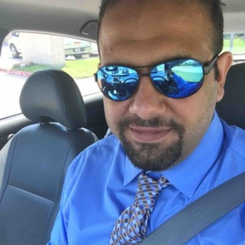

About Me

Hello World! My name is Ali, a computer engineer, technology enthusiast, searching and googling guru and computer geek. Currently going through career path transition by attending a coding bootcamp powered by university of Texas and also other online courses. I'm planning on combining my new skills ,supported by my motivations and passion, with other transferable proven skills that I gained and mastered through a very successful 4 years of working as a wireline lead engineer at Schlumberger, The oil services giant, skills that include team leading, project management, proven problem solving skills, adaptibility and self-development, and looking for a company where I can use this combination. I enojoy doing things, like writing a code and building a website, with thinking out of the box approach, and also enjoy the participation with a team to build a fully functional and responsive web sites and applications that represent the soul and the quality of the company to its audience and customers.
In 5 years I see myself pursuing master degree in graphic design, turning into full web designer/developer.